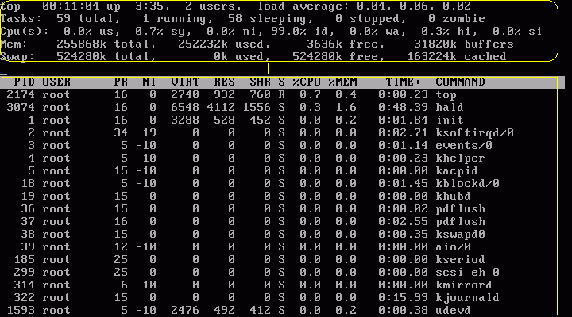

<<< 返回［预 习］索引
< 用 top 命令查看 CPU 使用率 > （最近更新日：2006/11/24）
在系统维护的过程中，随时可能有需要查看 CPU 使用率，并根据相应信息分析系统状况的需要。在 CentOS 中，可以通过 top 命令来查看 CPU 使用状况。运行 top 命令后，CPU 使用状态会以全屏的方式显示，并且会处在对话的模式 -- 用基于 top 的命令，可以控制显示方式等等。退出 top 的命令为 q （在 top 运行中敲 q 键一次）。
在命令行中输入 “top”
即可启动 top ，运行后如下图所示：

如上图所示，top 的全屏对话模式可分为3部分：系统信息栏、命令输入栏、进程列表栏。
第一部分 -- 最上部的 系统信息栏 ：
第一行（top）：
“00:11:04”为系统当前时刻；
“3:35”为系统启动后到现在的运作时间；
“2 users”为当前登录到系统的用户，更确切的说是登录到用户的终端数 -- 同一个用户同一时间对系统多个终端的连接将被视为多个用户连接到系统，这里的用户数也将表现为终端的数目；
“load average”为当前系统负载的平均值，后面的三个值分别为1分钟前、5分钟前、15分钟前进程的平均数，一般的可以认为这个数值超过 CPU 数目时，CPU 将比较吃力的负载当前系统所包含的进程；
第二行（Tasks）：
“59 total”为当前系统进程总数；
“1 running”为当前运行中的进程数；
“58 sleeping”为当前处于等待状态中的进程数；
“0 stoped”为被停止的系统进程数；
“0 zombie”为被复原的进程数；
第三行（Cpus）：
分别表示了 CPU 当前的使用率；
第四行（Mem）：
分别表示了内存总量、当前使用量、空闲内存量、以及缓冲使用中的内存量；
第五行（Swap）：
表示类别同第四行（Mem），但此处反映着交换分区（Swap）的使用情况。通常，交换分区（Swap）被频繁使用的情况，将被视作物理内存不足而造成的。
第二部分 --
中间部分的内部命令提示栏：
top 运行中可以通过 top 的内部命令对进程的显示方式进行控制。内部命令如下表：
s
- 改变画面更新频率
l - 关闭或开启第一部分第一行 top 信息的表示
t - 关闭或开启第一部分第二行 Tasks 和第三行 Cpus 信息的表示
m - 关闭或开启第一部分第四行 Mem 和 第五行 Swap 信息的表示
N - 以 PID 的大小的顺序排列表示进程列表（第三部分后述）
P - 以 CPU 占用率大小的顺序排列进程列表 （第三部分后述）
M - 以内存占用率大小的顺序排列进程列表 （第三部分后述）
h - 显示帮助
n - 设置在进程列表所显示进程的数量
q - 退出 top
s -
改变画面更新周期
第三部分 -- 最下部分的进程列表栏：
以 PID 区分的进程列表将根据所设定的画面更新时间定期的更新。通过 top 内部命令可以控制此处的显示方式。
一般的，我们通过远程监控的方式对服务器进行维护，让服务器本地的终端实时的运行 top ，是在服务器本地监视服务器状态的快捷便利之一。